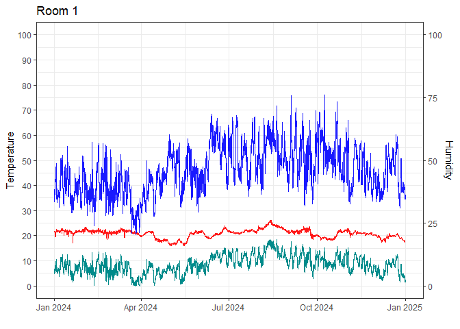
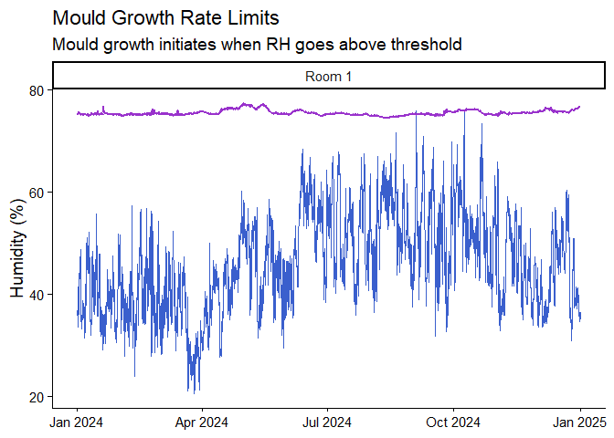
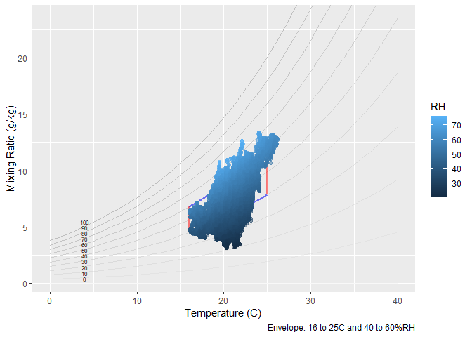
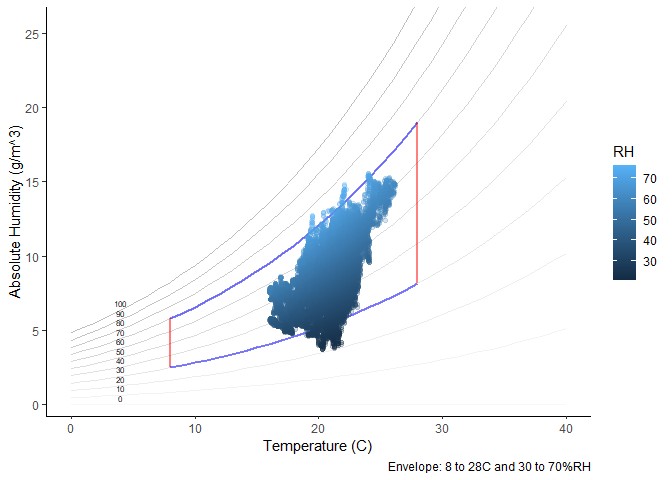

ConSciR is an R package that provides data science tools for conservation science.
It includes functions for environmental applications, humidity calculations, sustainability metrics, engineering calculations, and data visualisations such as psychrometric charts.
The toolkit is designed to assist conservators, scientists, and engineers in performing
calculations, analysing data, and streamlining common tasks in cultural heritage conservation.
ConSciR is intended for:
- Conservators working in museums, galleries, and heritage sites
- Conservation scientists, engineers, and researchers
- Data scientists developing applications for conservation
- Cultural heritage professionals involved in preventive conservation
- Students and educators in conservation and heritage science programmes
The package is also designed to be:
- FAIR: Findable, Accessible, Interoperable, and Reusable
- Collaborative: enabling contributions, feature requests, bug reports, and
additions from the wider community
If using R for the first time, read an article here: Using R for the first time
Tools
- Humidity calculations, conservator tools, and sustainability metrics.
- Mould growth models and damage risk functions.
- Graphical outputs including temperature-relative humidity (TRH) plots, psychrometric charts and data for other applications.
- Data tidying functions compatible with Meaco and Hanwell environmental monitoring devices.
- Interactive Shiny applications enabling dynamic data exploration and visualisation.
Installation
You can install the development version of ConSciR from GitHub with:
install.packages("pak")
pak::pak("BhavShah01/ConSciR")-or-
# install.packages("devtools")
devtools::install_github("BhavShah01/ConSciR")Examples
This section demonstrates some common tasks you can perform with the ConSciR package.
-
Load packages
Load ConSciR and some commonly used tidyverse packages for data manipulation and plotting.
-
Access an example dataset
A pre-loaded dataset (mydata) is included for testing and demonstration. Usehead()to view the first few rows and inspect the data structure. - Users can rename columns and structure their own datasets similarly to
mydatato ensure compatibility with ConSciR functions, which expect variables such as temperature and relative humidity in specific column names.
# My TRH data
head(mydata)
#> # A tibble: 6 × 5
#> Site Sensor Date Temp RH
#> <chr> <chr> <dttm> <dbl> <dbl>
#> 1 London Room 1 2024-01-01 00:00:00 21.8 36.8
#> 2 London Room 1 2024-01-01 00:15:00 21.8 36.7
#> 3 London Room 1 2024-01-01 00:29:59 21.8 36.6
#> 4 London Room 1 2024-01-01 00:44:59 21.7 36.6
#> 5 London Room 1 2024-01-01 00:59:59 21.7 36.5
#> 6 London Room 1 2024-01-01 01:14:59 21.7 36.2-
Perform calculations on the data
Use ConSciR functions to add environmental metrics such as dew point (calcDP), absolute humidity (calcAH), lifetime multiplier (calcLM), and preservation index (calcPI) to the dataset. More functions are available; see the package Reference for details.
# Peform calculations
head(mydata) |>
mutate(
DewP = calcDP(Temp, RH),
Abs = calcAH(Temp, RH),
LifeTime = calcLM(Temp, RH, EA = 100),
PI = calcPI(Temp, RH)
)
#> # A tibble: 6 × 9
#> Site Sensor Date Temp RH DewP Abs LifeTime PI
#> <chr> <chr> <dttm> <dbl> <dbl> <dbl> <dbl> <dbl> <dbl>
#> 1 London Room 1 2024-01-01 00:00:00 21.8 36.8 6.38 7.05 1.11 45.3
#> 2 London Room 1 2024-01-01 00:15:00 21.8 36.7 6.34 7.03 1.11 45.4
#> 3 London Room 1 2024-01-01 00:29:59 21.8 36.6 6.30 7.01 1.11 45.5
#> 4 London Room 1 2024-01-01 00:44:59 21.7 36.6 6.22 6.97 1.11 46.1
#> 5 London Room 1 2024-01-01 00:59:59 21.7 36.5 6.18 6.95 1.11 46.2
#> 6 London Room 1 2024-01-01 01:14:59 21.7 36.2 6.06 6.90 1.11 46.6-
Combine analysis with visualisation
Add a dew point line to the temperature-relative humidity graph using the package’s built-in plotting functiongraph_TRH().
mydata |>
mutate(DewPoint = calcDP(Temp, RH)) |>
graph_TRH() +
geom_line(aes(Date, DewPoint), col = "cyan4") + # add dew point
labs(title = "Room 1") +
theme_bw()
-
Conservator tools: mould growth estimation
Calculate mould growth risk usingcalcMould_Zeng()and visualise it alongside humidity data.
mydata |>
mutate(Mould = calcMould_Zeng(Temp, RH)) |>
ggplot() +
geom_line(aes(Date, RH), col = "royalblue3") +
geom_line(aes(Date, Mould), col = "darkorchid", size = 1) +
labs(title = "Mould Growth Rate Limits",
subtitle = "Mould growth initiates when RH goes above threshold",
x = NULL, y = "%rh") +
theme_classic(base_size = 14)
-
Humidity functions: generate a psychrometric chart
Visualise the dataset using a psychrometric chart with the functiongraph_psychrometric(). The first example shows a basic plot, while the second demonstrates how to customise parameters such as data transparency, temperature and humidity ranges, and the y-axis function. See the full documentation with?graph_psychrometric.
# Basic
mydata |>
graph_psychrometric() 
# Customise
mydata |>
graph_psychrometric(
data_alpha = 0.2,
LowT = 8,
HighT = 28,
LowRH = 30,
HighRH = 70,
y_func = calcAH
) +
theme_classic()